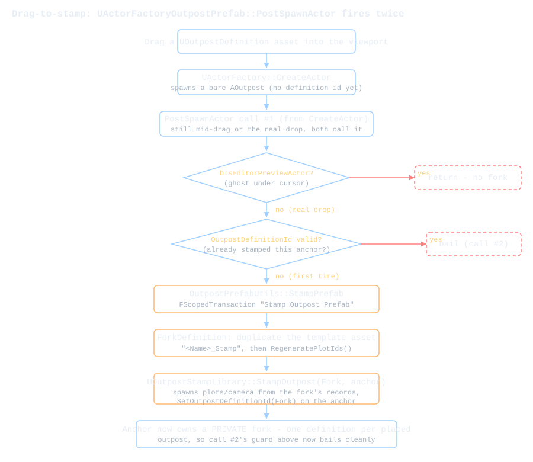
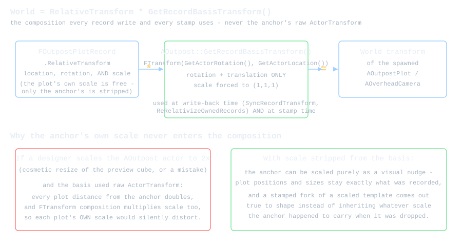

Prefabs & Fork-on-Stamp
This page covers the prefab model the stamping system is built on and how its pieces fit together. It's the most conceptually dense material on the site.
Any Outpost Definition Is a Prefab
There's no separate "prefab" asset type in this plugin. A UOutpostDefinition already holds everything a base needs to reconstruct itself: a display name, a faction (a fixed enum: identity and building-eligibility gating only, no visual effect), every plot's relative transform and assigned building, and an optional Overhead camera record.
There's a second, per-plot camera map too, PlotCameras. It's authoring-time only: stamping and restoring still spawn exactly one Overhead camera actor per outpost, from the single outpost-level record, never one per plot.
Once you've placed and dressed up one outpost, its definition asset already IS a prefab. Drag it back into the level and you get a full copy of that base.
// OutpostBuilder/Source/OutpostBuilder/DataAssets/OutpostDefinition.h
/**
* Data asset describing an outpost: its display name and the set of plots
* (each with a transform relative to the owning AOutpost actor and an
* optionally assigned building) placed within it.
*/
UCLASS(BlueprintType)
class OUTPOSTBUILDER_API UOutpostDefinition : public UPrimaryDataAsset
The design research looked hard at engine-native alternatives first, mainly Level Instances, before landing here. Level Instances give you real edit-in-context propagation.
They also need a .umap per prefab, a Save-As dialog that isn't headless by default, and per-instance property overrides gated behind World Partition. None of that fits a lightweight data asset that already carries FGuid plot identities and faction state.
Check out research/07-prefab-mechanisms.md if you want the full comparison against Level Instances and Packed Level Actors.
Fork-on-Stamp: One Definition per Placed Outpost, by Default
This was a law when the page was first written. It's a setting now, and the rest of this section describes what it is still the default.
A plot actor writes its own transform back into its owning definition's plot record every time you move it (more on that below). If two placed outposts pointed at the SAME definition asset, both sets of plots would be writing into the same record array, and whichever plot moved last would win.
That is why bForkDefinitionOnStamp ships on: every drag-and-drop places a fresh, forked copy of the template, so no two placements share a record array.
Turn it off and a definition becomes a genuine reusable template. Sharing stops being a corruption hazard because identity moved to a per-instance id and the write-backs above learned to refuse a shared template rather than fight over it. That is a different model with its own page: see Instance Identity. Everything below assumes the default.
Note: manually duplicating a placed AOutpost used to be the thing to avoid. With fork-on-stamp on it still makes plot write-backs ambiguous, and the write-back code skips rather than risk corrupting the wrong copy, so you get stale records instead of a crash. AOutpostPlot::FindOwningOutpostActor and AOutpost::ReRelativizeOwnedRecords both check for this and bail out.
With the default in place, stamping never lets two placements share a definition:
// OutpostBuilder/Source/OutpostBuilderEditor/Utils/OutpostPrefabUtils.h
// Any UOutpostDefinition doubles as a prefab. With bForkDefinitionOnStamp on, which is the
// default, dragging it into a level stamps a private forked copy so editing one placement never
// mutates the template. Turn that off and every drop binds the SAME definition, which is what
// makes it a reusable template - identity is the per-instance id, not the definition.
namespace OutpostPrefabUtils
{
// ...
UOutpostDefinition* ForkDefinition(const UOutpostDefinition* Template);
// ...
AOutpost* StampPrefab(UWorld* World, const UOutpostDefinition* Template, const FTransform& TargetTransform, AOutpost* OptionalAnchor);
// ...
AOutpostVolume* FindBlockingExclusionVolume(UWorld* World, const FVector& Location, FPrimaryAssetId IgnoreDefinitionId);
// ...
AOutpostVolume* SpawnDefaultOutpostVolume(UWorld* World, AOutpost* Outpost);
}
ForkDefinition duplicates the template into the settings-configured folder as <Name>_Stamp, uniqued against whatever's already there via IAssetTools::CreateUniqueAssetName (so stamping the same template twice gets _Stamp, then _Stamp1, and so on, never a collision), and immediately calls RegeneratePlotIds() on the copy.
That's what keeps the fork's plots from ever sharing a FGuid with the template's. It's also what keeps the fork's per-plot Overhead camera framings (PlotCameras, keyed by the same PlotId) pointed at the right plots:
RegeneratePlotIds() re-keys that map through the same old-id-to-new-id mapping it uses to reassign Plots, so a fork's per-plot framings travel with their plots instead of being silently orphaned or left pointing at the template's old ids:
// OutpostBuilder/Source/OutpostBuilderEditor/Utils/OutpostPrefabUtils.cpp
UOutpostDefinition* OutpostPrefabUtils::ForkDefinition(const UOutpostDefinition* Template)
{
UOutpostDefinition* Fork = Private::DuplicateDefinitionAsset(Template, TEXT("_Stamp"));
if (!Fork)
{
return nullptr;
}
Fork->RegeneratePlotIds();
FAssetRegistryModule::AssetCreated(Fork);
Fork->MarkPackageDirty();
// ...
(Private:: here is OutpostPrefabUtils::Private, this file's named internal-linkage namespace. See edmode.html's note on the plugin-wide convention of naming these rather than leaving them anonymous.)
StampPrefab first checks the drop point against every AOutpostVolume in the world via OutpostPrefabUtils::FindBlockingExclusionVolume. A stamp always mints a fresh definition id, so no volume is ever "its own" the way it would be for the self-excluded "Edit (Place Actor)" path below. Every volume in range blocks a stamp.
A blocked drop refuses right there, before the transaction or the fork, so there's nothing left to clean up. The designer gets a toast naming the blocking volume.
Past that check, StampPrefab wraps the rest in one undo transaction and works through a fixed sequence:
- Forks the template and spawns via
UOutpostStampLibrary::StampOutpost(the shared runtime spawn routine, alsoBlueprintCallableso gameplay code can stamp outposts too). - Harvests every actor label in the world once and uses it to label the outpost, its plots, and its Overhead camera uniquely.
- Folds the whole stamped base into its own World Outliner folder (
<Outpost Actor Folder>/<fork name>). The fork's fresh id means the by-definition-id fold sweep can only touch this stamp's actors, the same argument the label sweep rests on.StampOutpostitself is runtime-module and can no moreSetFolderPaththanSetActorLabel. - Records the fork's
PlacedOutpostPathANDPlacedOutpostTransformpointing at the new actor. Both are recorded together, since a fork that only recorded its path would restore at the world origin after a delete.
A failed fork or spawn cancels the transaction so no empty undo entry is left behind. A spawn failure after a successful fork logs the orphaned fork's name so you know to delete it by hand.
Undo has one asymmetry worth knowing: undoing a drag-stamp reverses the spawned actors and their records, but asset creation isn't transactional, so the <Name>_Stamp definition itself stays behind in the Content Browser.
The diagram below walks the whole drag-to-stamp sequence, including the idempotence guard we'll get to next.

The Idempotent PostSpawnActor
UActorFactoryOutpostPrefab is what makes dragging a UOutpostDefinition asset into the viewport spawn a stamped outpost instead of nothing. Its PostSpawnActor override does the forking and stamping.
There's a catch: the engine's placement subsystem calls PostSpawnActor on the SAME actor twice for one real drop, once from the base factory's CreateActor and once again from PostPlaceAsset.
StampPrefab is not something you want to run twice. It forks an asset and spawns actors. Do that twice and you end up with two definitions and two sets of plots for a single drop.
The factory bails on the second call using the anchor's own state as the signal. StampOutpost's first observable effect is assigning the fork's id to the anchor, which means a valid OutpostDefinitionId says "this anchor was already stamped":
// OutpostBuilder/Source/OutpostBuilderEditor/Factories/ActorFactoryOutpostPrefab.cpp
void UActorFactoryOutpostPrefab::PostSpawnActor(UObject* Asset, AActor* NewActor)
{
Super::PostSpawnActor(Asset, NewActor);
// Preview spawns (dragging the asset over the viewport before it is dropped) must never
// fork a definition asset or spawn plots/cameras - only a real placement stamps.
if (!NewActor || NewActor->bIsEditorPreviewActor)
{
return;
}
AOutpost* NewOutpost = Cast<AOutpost>(NewActor);
UOutpostDefinition* Definition = Cast<UOutpostDefinition>(Asset);
if (!NewOutpost || !Definition)
{
return;
}
// The placement subsystem invokes PostSpawnActor TWICE for a real drop (once from the
// base factory's CreateActor, once from PostPlaceAsset). StampPrefab is not idempotent -
// it forks a definition and spawns actors - so bail if this anchor was already stamped
// (StampPrefab assigns the fork's id to the anchor as its first observable effect).
if (NewOutpost->GetOutpostDefinitionId().IsValid())
{
return;
}
// A refused/failed stamp condemns its anchor below; the tag stops the SECOND PostSpawnActor
// invocation (see above) from re-attempting - and double-toasting - on an anchor already
// scheduled for destruction (its definition id is still invalid, so the id guard alone
// wouldn't catch it).
static const FName StampRefusedTag(TEXT("OutpostStampRefused"));
if (NewOutpost->ActorHasTag(StampRefusedTag))
{
return;
}
AOutpost* StampedOutpost = OutpostPrefabUtils::StampPrefab(NewActor->GetWorld(), Definition, NewActor->GetActorTransform(), NewOutpost);
if (!StampedOutpost)
{
// Refused (drop point within an exclusion volume - a hard refuse) or failed: the
// factory-spawned anchor must not survive as a bare, definition-less AOutpost. Destroying
// it DURING PostSpawnActor would yank an actor the placement subsystem still references
// this frame - defer one tick and destroy outside the drop's own call stack. (The anchor's
// definition id is invalid, so its Destroyed() cascade is a guaranteed no-op.) Known
// residual: the drop's own transaction stays in the undo buffer, so a later Redo can
// transiently resurrect the inert tagged anchor - cosmetic (it stays definition-less and
// cascade-free), and undo-before-the-timer-fires is safe via the weak ptr below.
NewOutpost->Tags.Add(StampRefusedTag);
TWeakObjectPtr<AOutpost> WeakAnchor(NewOutpost);
if (GEditor)
{
GEditor->GetTimerManager()->SetTimerForNextTick(FTimerDelegate::CreateLambda([WeakAnchor]()
{
if (AOutpost* Anchor = WeakAnchor.Get())
{
if (UWorld* AnchorWorld = Anchor->GetWorld())
{
AnchorWorld->EditorDestroyActor(Anchor, /*bShouldModifyLevel=*/true);
}
}
}));
}
}
}
There's a second guard above the definition-id check worth calling out separately: bIsEditorPreviewActor. While you're still dragging the asset across the viewport before you release the mouse, the engine spawns a preview ("ghost") actor under the cursor and calls the SAME factory hooks on it every frame.
Without that check you'd fork a new definition asset on every mouse-move during the drag, which would flood your content folder before you'd even placed anything.
The third guard, the OutpostStampRefused actor tag, exists because a real drop can now fail to stamp at all. If StampPrefab refuses or fails, that tag stops the drop's SECOND PostSpawnActor call from re-attempting the same doomed stamp and firing a second toast.
Between the three guards, PostSpawnActor on a real drop either stamps exactly once or is hard-refused once. Either way the factory's bare anchor never survives as a definition-less AOutpost. Destroying that anchor is deferred one tick rather than done inline, because doing it during PostSpawnActor itself would yank an actor the placement subsystem still references for the rest of the frame.
If you're adding your own actor factory for a new prefab-like asset type later, this is the pattern to copy: treat PostSpawnActor as "might run twice, might run on a preview actor."
Pick a piece of the actor's own post-spawn state as your "did I already do this" flag rather than a separate bool, since a separate bool wouldn't survive the factory potentially being invoked from two different call sites you don't control.
Exclusion Volumes Hard-Refuse a Stamp
OutpostPrefabUtils::FindBlockingExclusionVolume is the one shared exclusion rule in the plugin: it walks every AOutpostVolume in the world and returns the first one whose extents lie within the settings-configured OutpostExclusionDistance of a point. The mode's ghost validation calls it every frame while you're click-placing an outpost (red ghost, "Too close to \<volume>" HUD text, blocked confirm), and StampPrefab calls it once at drop time for a drag-stamp.
A volume can be told to ignore the definition it's already bound to, which is how "Edit (Place Actor)" is allowed to re-place a base inside its own volume. But a stamp never passes an id to ignore, because fork-on-stamp always mints a brand-new definition id.
There is no such thing as "this stamp's own volume" at drop time. Every volume in range blocks the drop. The moment a stamp lands, though, it gets one: every new-outpost path (mode placement, Edit (Place Actor), drag-stamp) spawns the fork's own default Outpost Volume via SpawnDefaultOutpostVolume (idempotent per definition id), so back-to-back stamps space themselves out automatically.
Two Non-Forking Entry Points: Restore and "Edit (Place Actor)"
Fork-on-stamp is the rule for a fresh drag-and-drop, but it's not the only way an AOutpost gets spawned from a UOutpostDefinition. Two other entry points deliberately do NOT fork, because in both cases the definition being reattached already belongs, unambiguously, to the actor about to exist:
// OutpostBuilder/Source/OutpostBuilder/Core/OutpostStampLibrary.h
// From PlaceDefinitionAt's doc comment (RestoreOutpost is documented separately, #if WITH_EDITOR).
// NOTE: an older version of this comment said StampOutpost FORKS. It does not, and structurally
// cannot - ForkDefinition is editor-only and the runtime module does not link it. The FORK happens
// one level up, in StampPrefab, before it calls StampOutpost with the fork. RestoreOutpost
// re-attaches the SAME definition at its RECORDED PlacedOutpostTransform and bails when
// PlacedOutpostPath already resolves to a live outpost; PlaceDefinitionAt also re-attaches the
// SAME definition (no fork - the caller chose an existing definition explicitly) but at an
// ARBITRARY caller-supplied Transform, regardless of any prior recorded placement.
static AOutpost* RestoreOutpost(UOutpostDefinition* Definition, UWorld* World);
static AOutpost* PlaceDefinitionAt(UObject* WorldContextObject, UOutpostDefinition* Definition, const FTransform& Transform);
Both call the same file-local SpawnPlotsAndCameraFromDefinition helper that StampOutpost uses, so plot and camera reattachment go through the identical Record.RelativeTransform * Outpost->GetRecordBasisTransform() composition described below. The two differ only in where the transform comes from and when each refuses to run.
RestoreOutpost (WITH_EDITOR-only; it's a recovery action, not a BlueprintCallable runtime stamp) respawns the outpost at the definition's recorded PlacedOutpostTransform, assigns the SAME OutpostDefinitionId, and rebuilds plots/camera from the definition's records.
It refuses in three cases, each logged as a warning and returning nullptr:
- The definition's
PlacedOutpostPathis null (never placed, nothing recorded to reconstruct). - The path still resolves to a live
AOutpost(nothing to restore). - The path is set but unresolved AND its owning map package isn't currently loaded in memory (the outpost may still be alive in a map that just isn't open). Respawning in that case would mint a second same-id placement and orphan the original on disk, so
RestoreOutpostnever loads a map itself to check.
The Content Browser's asset context menu exposes this as Restore Placed Outpost next to Locate, enabled only when the definition's placed path does not resolve to a live actor. It wraps the call in a "Restore Outpost" transaction, which also folds the restored base into the definition's Outliner folder before the transaction closes (the fold Modify()s each actor and can create a UActorFolder in a World Partition map, so it must not escape the undo scope).
It then selects, frames, and enters edit mode on the result.
This is also what makes RestoreOutpost a real whole-base recovery: deleting an outpost together with its plots (and now its volumes too) keeps every plot record on the definition (actors die, records survive), so RestoreOutpost rebuilds the entire base at its recorded transform. One Ctrl+Z right after that cascade delete gets you everything back without ever calling RestoreOutpost at all.
PlaceDefinitionAt is the runtime-callable, non-WITH_EDITOR-gated counterpart used by the "Edit (Place Actor)" workflow: it spawns at a caller-supplied FTransform rather than a recorded one, and has no live-actor guard because the caller (interactive viewport placement) only ever calls it for a definition it already knows is safe to place.
In the mode's toolkit, an outpost list entry whose definition has never had a placed actor (PlacementState == EOutpostPlacementState::NeverPlaced) shows an "Edit (Place Actor)" button instead of plain "Edit". Clicking it calls UOutpostBuilderEdMode::StartOutpostPlacementForDefinition(DefinitionId), which resolves the definition (toasting and bailing if it can't), stashes it as a pending placement, and starts the normal interactive placement flow.
ConfirmOutpostPlacement then branches on that pending definition: instead of creating a brand-new definition, it calls PlaceDefinitionAt with the clicked transform, binds the SAME definition id, reattaches the existing plots/camera at the new location, and enters edit mode on the result.
An entry whose definition has been placed but whose actor currently lives in an unloaded map keeps the plain "Edit" label. That case routes to LocateOutpostForDefinition and names the map instead of offering to place a second copy at all.
So there are three ways an AOutpost gets bound to a UOutpostDefinition, and it's worth keeping their names straight:
| Function | What it does | Guard |
|---|---|---|
StampOutpost |
Binds whatever definition it is handed and spawns plots from its records | Its editor caller StampPrefab is what forks, when the setting says to |
RestoreOutpost |
Reattaches at the recorded transform, same definition | Refuses if already live or unresolved-but-loaded |
PlaceDefinitionAt |
Reattaches at an arbitrary transform, same definition | No live-actor guard, because the caller already knows it's safe |
All three copy the same per-plot thing from the definition onto the spawned actor: its record's AssignedBuildingId. An unassigned plot renders the plugin-wide settings-asset EmptyPlotMesh, so nothing mesh-related travels with the definition on a fork. A fork's unassigned plots look like the template's because every project's unassigned plots look the same.
The persistent Faction enum comes across too, with one wrinkle: RestoreOutpost and PlaceDefinitionAt always apply it, but StampOutpost only does so when it spawns the anchor itself. A caller-supplied anchor is treated as a live outpost being re-stamped and keeps the faction it already has.
That's the case on the drag-stamp path, where the factory hands StampPrefab the anchor it just spawned, so a dragged-in stamp does not take its faction from the template.
Relative-Transform Math and the Unit-Scale Basis
Every plot and camera record stores a transform relative to its owning AOutpost, never an absolute world transform. The header comment says it plainly:
// OutpostBuilder/Source/OutpostBuilder/DataAssets/OutpostDefinition.h
/**
* A single plot placement recorded within an outpost's definition asset.
*
* RelativeTransform is relative to the owning AOutpost actor's transform:
* World = RelativeTransform * OutpostActorTransform.
*/
The "OutpostActorTransform" in that comment isn't literally GetActorTransform() though. It's GetRecordBasisTransform(). The difference matters:
// OutpostBuilder/Source/OutpostBuilder/Actors/Outpost.h
/**
* The basis every definition-record relative transform is stored against: this outpost's
* rotation + translation with UNIT scale. Records must never absorb anchor scale - a
* scaled anchor would otherwise shrink/distort every stamped copy.
*/
FTransform GetRecordBasisTransform() const { return FTransform(GetActorRotation(), GetActorLocation()); }
Scale is stripped on purpose. FTransform composition multiplies scale components along with location and rotation. If the basis carried the anchor's scale, scaling an AOutpost actor (even just as a cosmetic tweak to the preview cube) would silently distort every plot's own recorded scale the next time anything re-derived a world transform from it.
Since the same basis function is used both when a plot writes its transform back AND when StampOutpost spawns a fresh copy from a template, a scaled template would keep passing that distortion on to every stamp forever.
Both ends of the composition go through the four inline helpers in Outpost.h, the only place the multiply direction lives. Write-back uses MakeRecordRelativeTransform (Relative = World expressed in Basis space), from AOutpostPlot::SyncRecordTransform:
// OutpostBuilder/Source/OutpostBuilder/Actors/OutpostPlot.cpp
if (UOutpostDefinition* Definition = LoadPrimaryAssetSync<UOutpostDefinition>(OutpostDefinitionId))
{
Definition->SetPlotRelativeTransform(PlotId, MakeRecordRelativeTransform(GetActorTransform(), *OwningOutpost));
}
And stamping, from the file-local SpawnPlotsAndCameraFromDefinition helper that StampOutpost, PlaceDefinitionAt, and RestoreOutpost all share:
// OutpostBuilder/Source/OutpostBuilder/Core/OutpostStampLibrary.cpp
const FTransform EffectiveTransform = Outpost->GetRecordBasisTransform();
// ...
const FTransform PlotWorldTransform = ComposeRecordWorldTransform(Record.RelativeTransform, EffectiveTransform);
The plot's own RelativeTransform still carries its own scale just fine. Only the anchor's contribution to the basis is forced to unit scale.
MakeRecordRelativeTransform is the exact inverse of ComposeRecordWorldTransform, which is what keeps the two ends from drifting apart: get the multiply direction backwards in one of them and every stamped base silently distorts.
The diagram below shows the composition and why stripping just the anchor's scale (and nothing else) is the fix.

AOutpost::PostEditMove(bFinished) uses the same basis to keep things coherent when you move the anchor itself. Plots deliberately don't follow the anchor (no actor nesting in this plugin, by design).
A finished anchor move re-relativizes every owned plot and camera record against the anchor's NEW basis instead, leaving their world positions untouched. It skips this entirely when more than one outpost shares the definition id, since re-relativizing against the wrong anchor would corrupt a shared record.
Check out edmode.html for how the placement and selection side of this actor model works, and architecture.html for why plots are independent actors instead of children in the first place.
Record Identity Across Duplicate, Paste, Import, and Undo
A plot's FGuid PlotId is its claim on one specific record in the definition's plot array. If two plot actors in the world ever carried the same (OutpostDefinitionId, PlotId) pair, both would think they own the same record. Whichever one happened to sync last would clobber the other's data.
Ctrl-drag duplicate, copy/paste, and an outliner "Duplicate" all route through the same two engine hooks. Both clear the id:
// OutpostBuilder/Source/OutpostBuilder/Actors/OutpostPlot.cpp
void AOutpostPlot::PostDuplicate(bool bDuplicateForPIE)
{
Super::PostDuplicate(bDuplicateForPIE);
if (!bDuplicateForPIE)
{
PlotId = FGuid();
}
}
void AOutpostPlot::PostEditImport()
{
Super::PostEditImport();
PlotId = FGuid();
}
Notice the bDuplicateForPIE guard. Play-in-editor duplication isn't a designer making a copy. It's the same logical plot temporarily existing in a separate PIE world. That copy keeps its id.
A cleared PlotId should already mean no duplicate can collide with the original. IsRecordOwnershipUnique() re-checks at write time anyway, as a belt-and-suspenders measure against anything that slips a valid id through some other path (a scripted spawn, a hand-edited T3D paste, whatever we haven't thought of yet):
// OutpostBuilder/Source/OutpostBuilder/Actors/OutpostPlot.h
/** True when this plot's (OutpostDefinitionId, PlotId) pair is carried by no other plot actor in the world. Record write-backs/removals require uniqueness - a shared pair means a duplicate exists and writing would corrupt the original's record. */
bool IsRecordOwnershipUnique() const;
This same check gates every write-back path in the plugin: SyncRecordTransform, the shared SyncRecordField helper whose two callers are SyncRecordPlotSize and the placement-rule-matrix's SyncRecordPlotTags, the mode's Delete action removing a plot's record, and AOutpost's anchor-move re-relativization loop.
If ownership is ever ambiguous, all five just skip the plot silently rather than risk writing to the wrong copy's data.
So why doesn't undo need the same treatment? Undo and redo aren't duplication at all. They're the transaction system putting a UPROPERTY back to a previously recorded value.
PlotId is an ordinary (non-transient) property, which means it comes back automatically as part of whatever transaction touched it. There's no "duplicate" step for PostDuplicate/PostEditImport to intercept. Neither one fires on undo, because there's nothing to intercept.
What undo DOES need help with is anything the transaction system doesn't restore for you, which is the next section.
Typed Details Edits Fire PostEditChangeChainProperty, Never PostEditMove
PostEditMove(bFinished) only fires when you drag the viewport gizmo. Type a number directly into the Details panel's Location, Rotation, or Scale 3D fields and the engine routes that through PostEditChangeChainProperty instead. PostEditMove never fires for a typed edit at all. If the write-back only lived in PostEditMove, editing a plot's transform by typing it in would leave the definition silently stale.
Both AOutpost and AOutpostPlot override PostEditChangeChainProperty and check for the same three property names, then call the exact same private helper that PostEditMove(true) calls:
// OutpostBuilder/Source/OutpostBuilder/Actors/OutpostPlot.cpp
void AOutpostPlot::PostEditMove(bool bFinished)
{
Super::PostEditMove(bFinished);
if (bFinished)
{
SyncRecordTransform();
}
}
void AOutpostPlot::PostEditChangeChainProperty(FPropertyChangedChainEvent& PropertyChangedEvent)
{
Super::PostEditChangeChainProperty(PropertyChangedEvent);
// Typed transform edits in the Details panel never fire PostEditMove - sync the record
// here so the definition can't silently go stale.
const FName PropertyName = PropertyChangedEvent.GetPropertyName();
if (PropertyName == USceneComponent::GetRelativeLocationPropertyName() ||
PropertyName == USceneComponent::GetRelativeRotationPropertyName() ||
PropertyName == USceneComponent::GetRelativeScale3DPropertyName())
{
SyncRecordTransform();
}
// ...
}
AOutpost mirrors this with its own ReRelativizeOwnedRecords() behind both PostEditMove(true) and its own PostEditChangeChainProperty. Either actor ends up with exactly one write-back implementation, called from two input paths that both mean "the transform changed and it's final."
You'll want to follow this same two-hook pattern for any new transform-driven UPROPERTY you add to either actor. A single override of either hook alone will miss one editing path or the other.
Transaction and Undo Discipline
The plot's resolved building mesh (written to BuildingMeshComponent, or to MirroredBuildingParts in an editor world when the assigned building's BuildingActorClass mirrors static-mesh parts) is a derived cache, never data. It's cheap to recompute from OutpostDefinitionId and AssignedBuildingId.
Instead of wrapping it in Modify()/transactions and hoping undo threads it through correctly, we just never transact it and re-derive it wherever the underlying data could have changed: PostRegisterAllComponents, the editor-only OnConstruction, PostEditUndo, and the explicit setters.
PostRegisterAllComponents (not PostLoad, which AOutpostPlot doesn't override at all) is the realize path precisely because it runs in the editor AND in packaged games.
That's also why it can't just call RefreshBuildingPreview() unconditionally: in a game world (packaged or PIE) it runs inside time-sliced streaming, where the building mesh must NOT load synchronously, so that branch kicks an async load-then-swap instead and only the editor path stays synchronous.
The fence below elides the re-entrancy guard that sets bIsRealizingBuilding (cleared on the last line) and the async plumbing itself.
// OutpostBuilder/Source/OutpostBuilder/Actors/OutpostPlot.cpp
void AOutpostPlot::PostEditUndo()
{
Super::PostEditUndo();
// AssignedBuildingId/OutpostDefinitionId are restored by the transaction, but the runtime
// mesh is not transactional - re-derive it so undo/redo stays in sync.
RefreshBuildingPreview();
}
// ...
void AOutpostPlot::PostRegisterAllComponents()
{
Super::PostRegisterAllComponents();
// ...
UWorld* PlotWorld = GetWorld();
if (PlotWorld && PlotWorld->IsGameWorld())
{
BeginAsyncBuildingRefresh();
}
else
{
RefreshBuildingPreview();
}
// ...
bIsRealizingBuilding = false;
}
Note: here's a trap that's easy to hit because it's natural to assume the wrong thing about Transient. Transient only means "don't serialize this to disk." It does NOT mean "undo ignores this."
A transaction's archive isn't persistent, and CPF_Transient is only skipped when the archive IS persistent. So a plain Transient UPROPERTY gets captured and restored by undo/redo right along with everything else in that transaction.
A transient array of live component pointers that is only Transient will therefore be restored by an undo: undoing a building assignment puts the OLD array of component pointers back, while re-derive logic that assumed the array was already cleared orphans the live components it meant to destroy instead of replacing them.
The fix is the stronger NonTransactional specifier, which keeps a property out of both persistence AND the transaction buffer.
If you're adding your own transient derived-cache array or pointer to either actor and it holds onto live UObjects (components especially), reach for NonTransactional by default rather than plain Transient, unless you specifically want undo to restore it. Check out extending.html for this same trap listed again in the pitfalls checklist, alongside the other verification-history gotchas.
References
Engine source (relative to the UE 5.8 install):
Engine/Source/Editor/UnrealEd/Private/Factories/ActorFactory.cpp-CreateActor/PostPlaceAssetdouble-dispatch ofPostSpawnActor.Engine/Source/Editor/UnrealEd/Classes/ActorFactories/ActorFactory.h-CanCreateActorFrom,PostSpawnActorhook contract.Engine/Source/Editor/LevelInstanceEditor/Private/LevelInstanceActorFactory.cpp- the "one spawned actor,PostSpawnActorcascades into populating many" exemplar this plugin's factory mirrors.Engine/Source/Runtime/CoreUObject/Private/UObject/Property.cpp:1057-1067-ShouldSerializeValue, whyCPF_Transientis restored by a non-persistent transaction archive.Engine/Source/Runtime/Engine/Classes/GameFramework/Actor.h-OwnedComponentsnot being transaction-restored (the other half of theNonTransactionalstory).
Repo files:
OutpostBuilder/Source/OutpostBuilder/DataAssets/OutpostDefinition.handOutpostDefinition.cppOutpostBuilder/Source/OutpostBuilder/Actors/Outpost.handOutpost.cppOutpostBuilder/Source/OutpostBuilder/Actors/OutpostPlot.handOutpostPlot.cppOutpostBuilder/Source/OutpostBuilder/Core/OutpostStampLibrary.handOutpostStampLibrary.cppOutpostBuilder/Source/OutpostBuilderEditor/Utils/OutpostPrefabUtils.hand.cppOutpostBuilder/Source/OutpostBuilder/Actors/OutpostVolume.h-AOutpostVolume, the exclusion volumeFindBlockingExclusionVolumechecks againstOutpostBuilder/Source/OutpostBuilderEditor/Factories/ActorFactoryOutpostPrefab.hand.cppOutpostBuilder/Source/OutpostBuilderEditor/OutpostBuilderEditorModule.cpp- the Content Browser's Restore Placed Outpost context-menu actionOutpostBuilder/Source/OutpostBuilderEditor/Widgets/SOutpostsOverviewPanel.hand.cpp- the "Edit (Place Actor)" button's label, enable state, and click dispatch;OutpostBuilderEdMode.cpp-StartOutpostPlacementForDefinition
Research:
research/07-prefab-mechanisms.md- the Level Instance / Packed Level Actor / Data Layer comparison behind the pure-data stamping decision.research/08-v04-design-synthesis.md- the fork-on-stamp verdict and relative-transform migration plan.research/04-adversarial-verification-log.md- theTransientvsNonTransactionalfinding this page's undo section is built on.